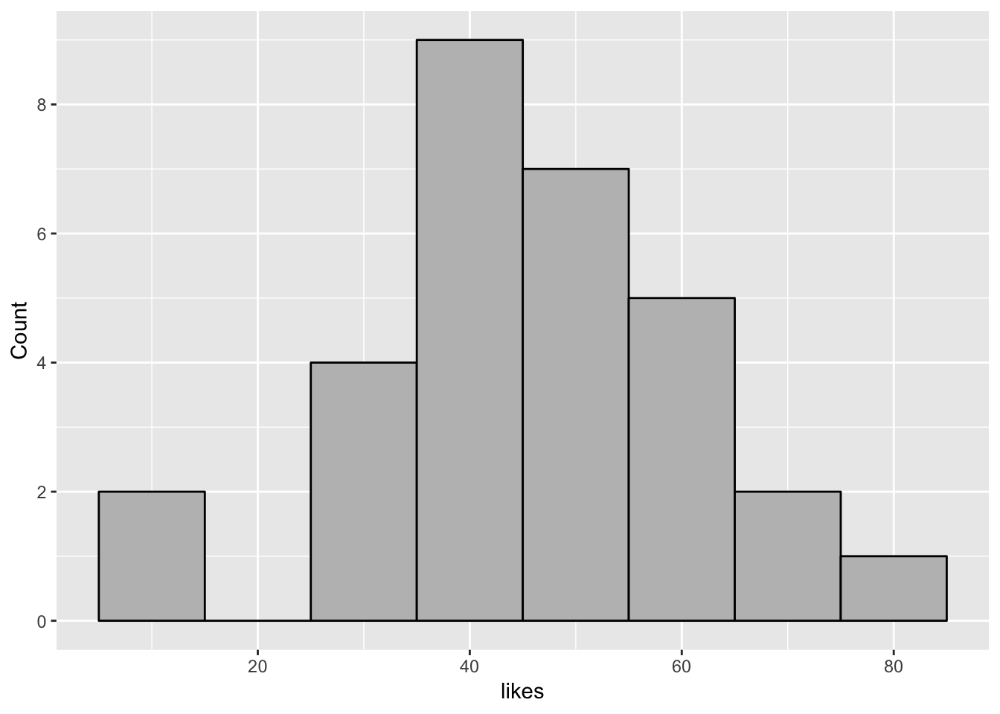

অধ্যায় 3 ডেটা ডিস্ট্রিবিউশন
অধ্যায়ের নামটি কঠিন হয়ে গেল।
পাঠক, ধারণা করছি আপনি এই শব্দের সাথে পরিচিত নন। এই অধ্যায়ে পরিসংখ্যান তথা ডেটা এনালিসিসের অন্যতম গুরুত্বপূর্ণ ধারণাটি আমরা জানার চেষ্টা করব। ডিস্ট্রিবিউশন যদি বোঝা যায় তাহলে প্রবাবিলিটি ডিস্ট্রিবিউশন কী সেটিও সহজেই বোঝা যাবে। আর সে কারণেই এই অধ্যায়ে ডেটা ভিজুয়ালাইজেশনের মাধ্যমে আমরা ডেটা ডিস্ট্রিবিউশনের ব্যাপারটি রপ্ত করব।
প্রথমত এই অধ্যায়ের মূল লক্ষ্য ডেটা ভিজুয়ালাইজেশন। দ্বিতীয়ত ডেটা ভিজুয়ালাইজেশনের মাধ্যমে পরিসংখ্যানের মৌলিক কিছু কনসেপ্ট সম্পর্কে মনের মধ্যে আপনা থেকেই প্রশ্ন তৈরী করব। তারপর সেই প্রশ্নের উত্তর আমরা খোঁজার চেষ্টা করবো। ডেটাকে সংখ্যা বা টেবিলের মাধ্যমে না দেখে, চিত্র বা গ্রাফের মাধ্যমে দেখলে অনেক সময় এমন তথ্য পাওয়া যায় যা অন্যভাবে দেখলে পাওয়া যায় না। সে কারণে ডেটা ভিজুয়ালাইজেশনের প্রতি গুরুত্ব দিচ্ছি।
এই অধ্যায়ে ডেটা ভিজুয়ালাইজেশনের জন্য যে কম্পিউটার কোড ব্যবহার করা হচ্ছে সেগুলো আপনি বুঝতে না পারলেও কোন সমস্যা নেই। যারা R সফটওয়্যারের সাথে পরিচিতি তারা ইচ্ছে করলে কোডগুলো আপনাদের কম্পিউটারে চালিয়ে দেখতে পারেন। নিজের অনুশীলনের জন্য কোডগুলো আশা করি কাজে দেবে।
প্রথমে আমাদের ডেটা খুঁজে বের করতে হবে। বাংলাদেশ সরকার অনেক ডেটা এখন অনলাইনে পাবলিশ করে। সেখান থেকে কোন একটি ডেটা আমরা নিয়ে ব্যাবহার করেতে পারি।
3.1 ডিস্ট্রিবিউশন কী?
ডিস্ট্রিবিউশন– ইংরেজীতে distribution, আর বাংলায়– বিন্যাস। যার অর্থ ছড়িয়ে থাকা। অর্থাৎ কোন কিছু যেভাবে ছড়িয়ে আছে সেটিকে তার বিন্যাস বলে। আমরা বিন্যাস শব্দটি ব্যবহার করব না; আমরা ব্যবহার করব ডিস্ট্রিবিউশন শব্দটি। আমরা চাই ডিস্ট্রিবিউশন শুনলেই আমাদের চোখে যেন ভেসে ওঠে ডিস্ট্রিবিউশন বলতে কী বোঝায়। যেমন–
- বাংলাদেশের মানুষেরা নানা বিভাগে কীভাবে ডিস্ট্রিবিউটেড বা ছড়িয়ে আছে সেটিকে বলব পপুলেশন ডিস্ট্রিবিউশন
- সুন্দরবনে বাঘগুলো বনের কোথায় কোথায় কীভাবে ছড়িয়ে আছে, সেটিকে বলব বাঘের ডিস্ট্রিবিউশন
- আপনার পড়ার টেবিলে বইগুলো যেভাবে ছড়িয়ে আছে সেটিকে আমরা বলতে পারি বইগুলোর ডিস্ট্রিবিউশন
এ তো গেল অতি পরিচিত কিছু উদাহরণ। উল্লিখিত উদাহরণের সবগুলি যে টেকনিক্যালি নিখুঁত তা নয়। কিন্তু ডিস্ট্রিবিউশন বলতে কী বোঝায় সেটি বোঝাটাই আসল।
ডিস্ট্রিবিউশনের প্রাথমিক ধারণা থেকে আমাদের মনের মধ্যে নানা রকম প্রশ্ন জাগতে পারে। যেমন, ছড়িয়ে থাকা বলতে আমরা কী বোঝাচ্ছি? বাংলাদেশের পপুলেশন ডিস্ট্রিবিউশন বলতে আমরা আসলে কী বোঝাচ্ছি?
এর উত্তর হতে পারে নানা রকম। যেমন–
- বাংলাদেশের জনসংখ্যার কতভাগ পুরুষ আর কতভাড় স্ত্রী সেটি এই পপুলেশনের জেন্ডার ভিত্তিক ডিস্ট্রিবিউটশন (sex distribution)
- জনসংখ্যার কত সংখ্যক বিভিন্ন বয়সগ্রুপে আছে সেটি পপুলেশনের বয়সভিত্তিক ডিস্ট্রিবিউটশন (age distribution)। যেমন ০-৫ বছর বয়সী জনসংখ্যা, ৫-১০ বছর বয়সী জনসংখ্যা, ইত্যাদি
- তেমনি বাংলাদেশের কোন জেলাতে কী পরিমাণ মানুষ বাস করে সেটি জনসংখ্যার স্পেশিয়াল ডিস্ট্রিবিউটশন (spatial distribution)
এখন ভাবুন তো ফেইসবুক পোস্টে লাইকের ডিস্ট্রিবিউটশন বলতে আমরা তাহলে কী বুঝব? এই ডিস্ট্রিবিউটশনও নানা রকমের হতে পারে। যেমন–
- বন্ধুদের জেন্ডারের ভিত্তিতে লাইকের ডিস্ট্রিবিউটশন। ছেলে ও মেয়ে বন্ধুদের লাইক করার শতকরা হার
- ০-১০ টি লাইক পেয়েছে এমন পোস্টের সংখ্যা, ১১-২০ টি লাইক পেয়েছে এমন পোস্টের সংখ্যা, এভাবে পোস্টে লাইকের ডিস্ট্রিবিউটশন
এভাবে দৈনিক ইন্টারনেট ব্যবহারের ডেটা থেকে আমরা ইন্টারনেট ব্যবহারের ডিস্ট্রিবিউটশন সম্পর্কেও কিছুটা ধারণা করতে পারব। যেমন–
- সপ্তাহভিত্তিক ইন্টারনেট ডেটা ব্যবহারের ডিস্ট্রিবিউটশন
- ০ থেকে ২৫০ মেগা ডেটা কতবার ব্যবহার করেছি, ২৫০ থেকে ৫০০ মেগা কতবার ব্যবহার করেছি, এভাবে ডেটা ব্যবহারের পরিমাণকে যদি বিভিন্ন শ্রেনীতে ভাগ করি তাহলে সেটা হবে ইন্টারনেট ডেটা ব্যবহারের ডিস্ট্রিবিউটশন
3.2 পরিসংখ্যানে ডিস্ট্রিবিউটশন কী?
উপরের উদাহরণগুলো অবশ্যই ডিস্ট্রিবিউটশনের উদাহরণ। বাস্তবজীবনের নানা ঘটনাকে আমরা এভাবে ডিস্ট্রিবিউশনের সংজ্ঞায় ফেলতে পারি। তবে পরিসংখ্যানের ডিস্ট্রিবিউশনের সুনির্দিষ্ট অর্থ রয়েছে। উপরের উদাহরণগুলো থেকে সেটি আলাদা কিছু নয়। বরং উপরের উদাহরণগুলোর মধ্যেই আছে পরিসংখ্যান ডিস্ট্রিবিউটশন বলতে যা বোঝায়।
পরিসংখ্যানে ডিস্ট্রিবিউশন শব্দটি ব্যবহৃত হয় ভ্যারিয়েবলের সাথে যুক্ত করে। অর্থাৎ ডিস্ট্রিবিউটশন বলতে ভ্যারিয়েবলের ডিস্ট্রিবিউটশন বোঝায়। আরো সুনির্দিষ্ট করে বললে র্যান্ডম ভ্যারিয়েবলের ডিস্ট্রিবিউটশন বোঝায়। তবে র্যান্ডম ভ্যারিয়েবল ও তার ডিস্ট্রিবিউটশন আমরা পরে জানব। আপাতত ভ্যারিয়েবলের ডিস্ট্রিবিউটশন বুঝতে চেষ্টা করি।
3.2.1 ভ্যারিয়েবলের ডিস্ট্রিবিউটশন
মনে করার চেষ্টা করুন ভ্যারিয়েবল কী?
ভ্যারিয়েবল হলো ডেটার মধ্যে যে কলাম গুলো থাকে সেগুলো। ভ্যারিয়েবলের মান হতে পারে সংখ্যা (যেমন, ১, ২, ইত্যাদি) বা মান (যেমন, নাম, সময়)। এই মানগুলো ডেটার প্রত্যেকটি সারির জন্য একই হয় না। অর্থাৎ ভ্যারিয়েবল একেক সময় একেক মান গ্রহণ করতে পারে। একাধিক সারিতে একই মানও হতে পারে। কিন্তু এমন হয়না যে ভ্যারিয়েবলের সবগুলো মান একই। সেক্ষেত্রে সেটি হবে ধ্রুবক বা ফিক্সড। কোন একটি ভ্যারিয়েবল কী মান গ্রহণ করবে সেটি সেই ভ্যারিয়েবলের ধরণ ও ডিস্ট্রিবিউশনের উপর নির্ভর করে। প্রশ্ন হচ্ছে– ভ্যারিয়েবলের ডিস্ট্রিবিউটশন বলতে কী বোঝায়?
লক্ষ্য করুন, ভ্যারিয়েবলের ডিস্ট্রিবিউটশন ঐ ভ্যারিয়েবল কী মান গ্রহণ করতে পারে তার সাথে সম্পর্কযুক্ত। অর্থাৎ ভ্যারিয়েবলের মানগুলো কী কী হতে পারে এবং সে মান গুলো কীভাবে বিন্যস্ত হয় তাকে সেই ভ্যারিয়েবলের ডিস্ট্রিবিউটশন বলে। নীচের টেবিলে উদাহরণ দিয়ে ব্যপারটি সহজ করে দেখানোর চেষ্টা করি।
| ভ্যারিয়েবল | বাস্তবে কাজের প্রশ্ন যার উত্তর জানতে চাই | ভ্যারিয়েবলের সম্ভাব্য মান |
|---|---|---|
| ফেইসবুক লাইক | লাইক যে দিয়েছে সে ছেলে না মেয়ে? | ছেলে, মেয়ে |
| - | পোস্ট করার প্রথম ঘন্টায় কয়টি লাইক পড়েছে? প্রতি ঘন্টায় কয়টি লাইক পড়ছে? | ০, ১, ২, … বার |
| - | ১০ - ২০ টি লাইক পড়েছে কতবার? ৫০ এর কম লাইক পড়েছে কতবার? ১০০টির বেশী লাইক পড়েছে কতবার? | ০, ১, ২, … বার |
| ইন্টারনেট ডেটা ব্যবহার | সপ্তাহে মোট ডেটা ব্যবহারের পরিমাণ | শূন্য বা শূন্য থেকে বড় যেকোন সংখ্যা |
| - | দিনে ১ গিগাবাইট ডেটা ব্যবহার হয়েছে কতবার? | ০, ১, ২, … বার |
| মিরপুর-মতিঝিল কমিউট টাইম | সকালে রওনা দিলে দুই ঘন্টার মধ্যে মতিঝিল পৌঁছেছে এমন কতদিন হয়েছে। পরে এর সম্ভাবনা আমরা জানতে চাইব। | ০, ১, ২, … বার |
চলুন তাহলে ফেইসবুক লাইক ডেটা, ইন্টারনেট ডেটা ব্যবহারের পরিমাণ, কমিউট সময়– এসব ভ্যারিয়েবলের ডিস্ট্রিবিউটশন কেমন। ভ্যারিয়েবলের ডিস্ট্রিবিউটশন দেখতে হলে আমাদেরকে চিত্রের সাহায্য নিতে হবে। স্ট্যাটিসটিক্যাল সফটওয়্যারের সাহাযে্য খুব সহজেই আমরা ডেটা ডিস্ট্রিবিউটশন দেখতে পারব।
3.3 ফ্রিকোয়েন্সি ডিস্ট্রিবিউটশন
ভ্যারিয়েবলের মানগুলো কোনটি কতবার ঘটছে সেটিকে একটি টেবিলের মাধ্যমে প্রকাশ করলে তাকে ফ্রিকোয়েন্সি ডিস্ট্রিবিউটশন বলে। ফ্রিকোয়েন্সি ডিস্ট্রিবিউটশন সাধারণত ক্যাটেগরিক্যাল ডেটার জন্য করা হয়। তবে কোয়ান্টিটেটিভ ডেটার জন্যও করা যায়। কিন্তু সেটি কদাচিত করা হয়ে থাকে কেননা কোয়ান্টিটেটিভ ভ্যারিয়েবলের ফ্রিকোয়েন্সি টেবিল খুব কাজের নয়। ডেটার আকার ছোট হলে কিংবা ভ্যারিয়েবলের মান অল্পসংখ্যক হলে সেক্ষেত্রে ফ্রিকোয়েন্সি টেবিল কাজে দিতে পারে। যেমন লিংগভেদে ইন্টারনেট ব্যবহারকারির ডিস্ট্রিবিউটশন টেবিল 3.1 তে দেয়া হল।
| Frequency | Percent | |
|---|---|---|
| Female | 124 | 51.03 |
| Male | 119 | 48.97 |
| Total | 243 | 100.00 |
এই ডিস্ট্রিবিউটশন থেকে আমরা দেখতে পাই ইন্টারনেট ব্যবহারকারির 51.03% মহিলা এবং বাকীরা পুরুষ। তেমনি লিংগভেদে গড় ইন্টারনেট ব্যবহারের পরিমাণও আমরা দেখতে পারি।
| sex | Avg_Usage |
|---|---|
| Female | 159.8 |
| Male | 154.4 |
3.4 হিস্টোগ্রাম
ডেটার ডিস্ট্রিবিউটশন দেখতে দুই ধরনের চিত্র ব্যবহার করা যায়। ক্যাটেগরিক্যাল ডেটার জন্য ফ্রিকোয়েন্সি টেবিল আর কোয়ান্টিটেটিভ ডেটার জন্য হিস্টোগ্রাম। পরিসংখ্যানে ফ্রোকোয়েন্সি বলতে কোন ভ্যারিয়েবলের মান কতবার ঘটছে সেটি বোঝায়। যেমন, ১০ জন ছাত্র-ছাত্রীর মধ্যে ৪ জন ছেলে আর ৬ জন মেয়ে। এই ৪ হল ছাত্রের ফ্রিকোয়েন্সি আর ৬ হলো ছাত্রীর ফ্রিকোয়েন্সি। অর্থাৎ ডেটার মধ্যে ছাত্র ও ছাত্রী কতবার আছে সেটিকেই ফ্রিকোয়েন্সি বলে।
আর কোয়ান্টিটেটিভ ডেটার জন্য আঁকা হয় হিস্টোগ্রাম। হিস্টোগ্রাম কীভাবে হাতে কলমে করা হয় সেটি এই বইয়ের উদ্দেশ্যের বাইরে। সে জন্য পরিসংখ্যানের যেকোন পাঠপুস্তক দেখে নিতে হবে। এখানে হিস্টোগ্রামের একটা ওভারভিউ দেয়া হবে এবং মূলত হিস্টোগ্রাম ব্যবহার করে কীভাবে ডেটার ডিস্ট্রিবিউটশন সম্পর্কে জানা যাবে সেটি দেখানো উদ্দেশ্য।
হিস্টোগ্রাম বানানোর জন্য প্রথমে ডেটাকে আমরা কয়েকটি ঝুড়ি বা বাকেট (bucket) বা বিন (bin)-এ ভাগ করব। এরপর প্রতিটি বিনে কয়টি ডেটা আছে সেটি গুনব। ফেইসবুক লাইকের ডেটার দিতে তাকালে আমরা দেখব শূন্যের নীচে লাইক সংখ্যা হতে পারে না। আর আমাদের ডেটায় সর্বোচ্চ লাইকের সংখ্যা 77। তাহলে শূন্য থেকে ৮০ পর্যন্ত যদি ১০টি বিন বানাই তাহলে সেগুলো হবে ০-১০, ১০-২০, ২০-৩০, ৩০-৪০, ৪০-৫০, ৫০-৬০, ৬০-৭০, ৭০-৮০।
যদিও ফ্রিকোয়েন্সি টেবিল ডেটা সামারাইজ করার জন্য
summary(fblikes$likes)## Min. 1st Qu. Median Mean 3rd Qu. Max.
## 7.00 41.00 44.50 45.53 55.50 77.00library(ggplot2)
ggplot(fblikes, aes(x = likes)) +
geom_histogram(color = "black", fill = "gray", binwidth = 10) +
scale_y_continuous("Count", c(seq(0,10,2)))
3.5 কমিউট টাইম (মিরপুর টু মতিঝিল)
কমিউট টাইম
## Parsed with column specification:
## cols(
## dates = col_date(format = ""),
## day_name = col_character(),
## bus = col_double(),
## uber = col_double(),
## pathao = col_double(),
## time_of_day = col_character()
## )names(commute_morning)## [1] "dates" "day_name" "bus" "uber" "pathao"
## [6] "time_of_day"